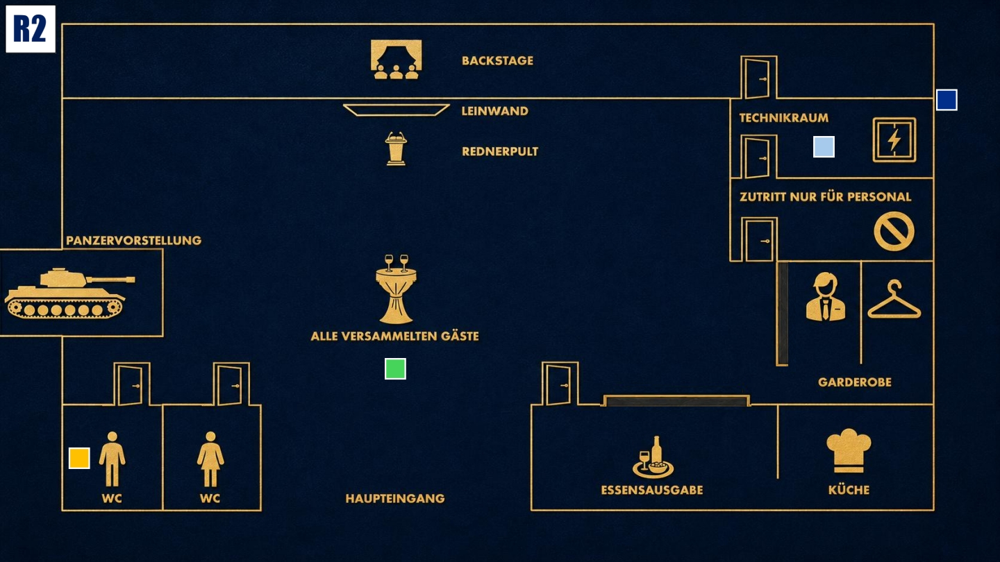

Druck aufbauen
Das Spiel wird intensiver. Nutze neue Informationen klug und bringe andere in Erklärungsnot.

Das Ziel der zweiten Runde
Beobachte Jake genau und prüfe, ob seine Vergangenheit ihn aus der Fassung bringt. Sorge gleichzeitig dafür, dass Eric nicht über seine Erpressung spricht und der Verdacht nicht auf dich oder Michael fällt.
Deine Ausgangslage
Nach außen bist du ein ruhiger Sicherheitsberater. Doch du weißt: Der Blackout war geplant. Du warst am Sicherungskasten, um zu prüfen, ob Eric nicht kneift.
Eric darf deshalb nicht über die Erpressung sprechen. Jake soll wegen seiner Vergangenheit unter Druck geraten, während du Michael schützt.
Dein Beweis
Etwa 20 Minuten nach Beginn der zweiten Runde öffnest du deinen Beweis.
Du hast dieses Druckmittel für den Notfall dabei, falls Eric dich hintergeht oder zu viel redet. Lies den Beweis allen vor, sobald es so weit ist.
Du behauptest, dass du den Beweis als Sicherheitsbeauftragter sofort eingesteckt hast, nachdem du ihn auf dem Boden entdeckt hast, denn du dachtest, er könnte noch nützlich werden.
Deine Geheimnisse
1. Die Sabotage: Während des Blackouts warst du am Sicherungskasten. Du wolltest sicherstellen, dass Eric nicht kneift und der Blackout wie geplant stattfindet.
2. Wissen über 1996: Du warst dabei, als Jakes Einheit in Kolumbien zuschlug. Du hast gesehen, wie Michaels Vater starb. Du bist der einzige lebende Zeuge, der damals entkommen konnte.
Deine Mission
1. Eric zum Schweigen bringen: Falls Eric nervös wird oder von Erpressung spricht, mach ihm klar, dass Verrat Konsequenzen hat. Bleib dabei kontrolliert und nicht zu offensichtlich.
2. Jake unter Druck setzen: Streue einzelne Andeutungen über den Vorfall von 1996. Sprich über Schuld, Vergangenheit und Verantwortung, ohne direkt zu verraten, was du wirklich weißt.
Deine Erinnerung an 19:00 Uhr

Zum Vergrößern tippen
Du überprüfst von außen, ob Eric im Technikraum seine Aufgabe erfüllt. Du fürchtest, dass er dich verraten könnte. Diana begrüßt die Gäste, während Michael auf der Toilette ist.
Mögliche Fragen
An Eric: „Technik ist anfällig, Dumont. Aber Menschen, die ihre Fehler nicht eingestehen können, sind noch viel anfälliger, finden Sie nicht?“
An Jake: „Warst du nicht in dieser Spezialeinheit, die damals bei einer großen Operation in Kolumbien eingesetzt wurde?“